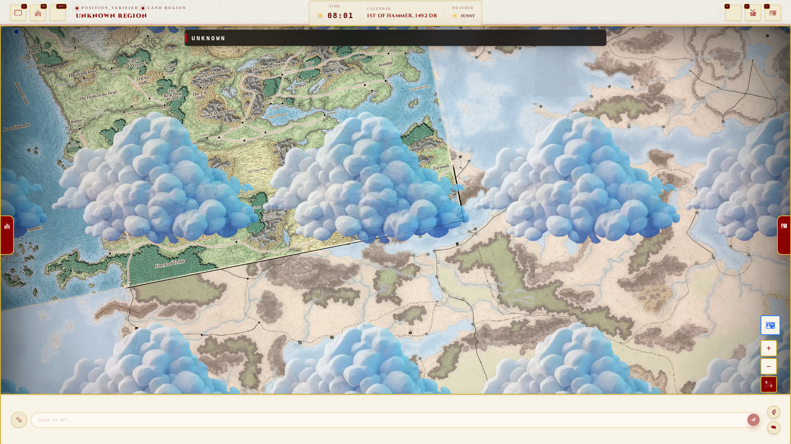
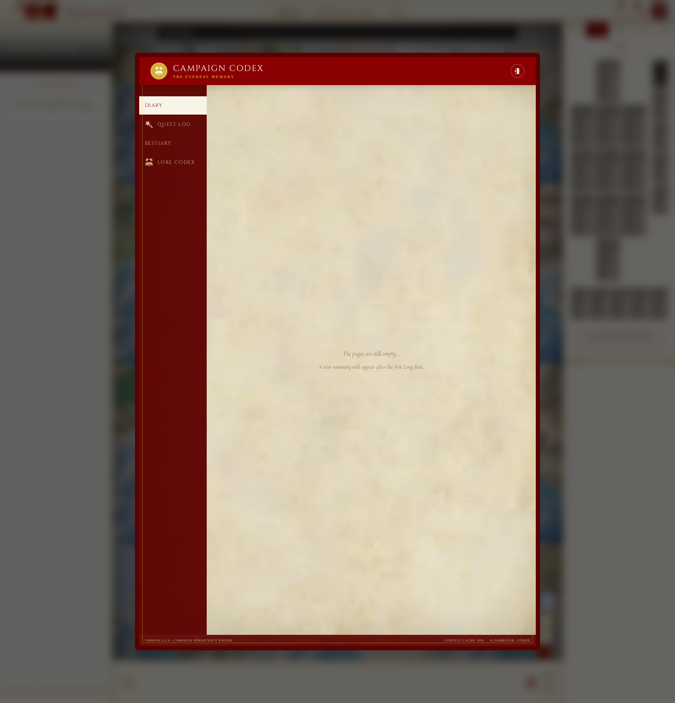
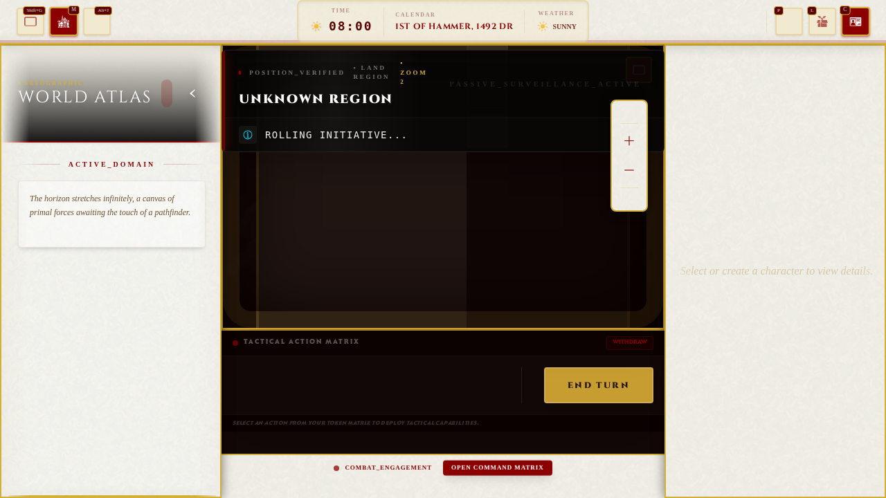

Atlas & Reality DB
The structured backbone of campaign reality: locations, markers, travel states, and world data persistence.

Independent tabletop campaign software
Artificer is a campaign control room for game masters: living atlas, campaign memory, character vault, tactical table, dice, audio atmosphere and AI-ready orchestration in one polished toolkit.
Campaign pitch
The site is built around actual product screens. It should sell the thing that already exists, then ask support for polish, demo mode and the AI GM bridge.

The Foundry of Worlds
Artificer is built as a series of deep, interconnected modules that replace a dozen disconnected tools with a single source of truth.
The structured backbone of campaign reality: locations, markers, travel states, and world data persistence.
A Narrator vs. Engine architecture designed for dynamic session history, quest logs, and AI-assisted narration.
Advanced equipment logic, slot-based containers, and character progression management.
High-fidelity encounter grids with initiative tracking, token context, and tactile digital dice.
Layered, scene-aware soundscapes that evolve with your campaign's narrative pulse.
Full-scale material and recipe architecture for deep world-building and item validation.



Support path
The first public ask should be simple: help polish the prototype into a clean demo. When the walkthrough and demo content are strong, this page can point directly to a full Kickstarter campaign.
Fuel for polish passes, bug fixes and better public screenshots.
Supports demo sessions, feedback loops and onboarding improvements.
Helps fund AI tooling, campaign-safe data and creator-facing tools.
Roadmap for backers